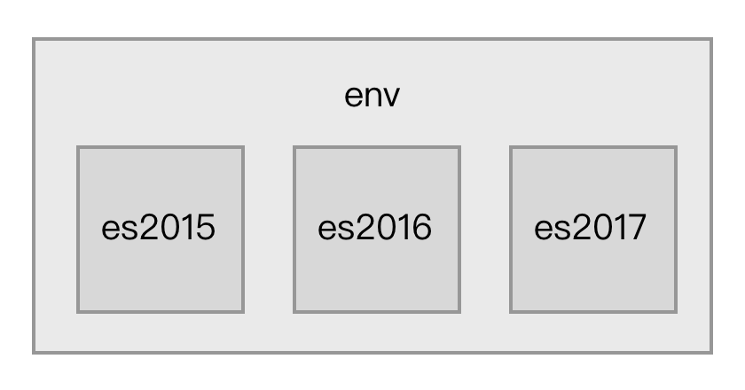
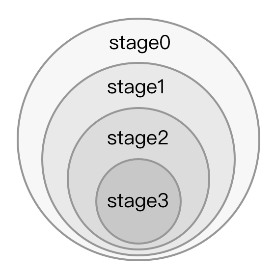

3-1 使用 ES6 语言
ECMAScript 6.0 是2015年发布的下一代 JavaScript 语言标准，它引入了新的语法和 API 来提升开发效率。
想学习更多 ES6 的新特性，推荐阅读阮一峰的《ECMAScript 6 入门》：
虽然目前部分浏览器和 Node.js 已经支持 ES6，但由于它们对 ES6 所有的标准支持不全，这导致在开发中不敢全面地使用 ES6。
通常我们需要把采用 ES6 编写的代码转换成目前已经支持良好的 ES5 代码，这包含2件事：
- 把新的 ES6 语法用 ES5 实现，例如 ES6 的
class语法用 ES5 的prototype实现。 - 给新的 API 注入 polyfill ，例如使用新的
fetchAPI 时注入对应的 polyfill 后才能让低端浏览器正常运行。
Babel
Babel 可以方便的完成以上2件事。 Babel 是一个 JavaScript 编译器，能将 ES6 代码转为 ES5 代码，让你使用最新的语言特性而不用担心兼容性问题，并且可以通过插件机制根据需求灵活的扩展。 在 Babel 执行编译的过程中，会从项目根目录下的 .babelrc 文件读取配置。.babelrc 是一个 JSON 格式的文件，内容大致如下：
{
"plugins": [
[
"transform-runtime",
{
"polyfill": false
}
]
],
"presets": [
[
"es2015",
{
"modules": false
}
],
"stage-2",
"react"
]
}
Plugins
plugins 属性告诉 Babel 要使用哪些插件，插件可以控制如何转换代码。
以上配置文件里的 transform-runtime 对应的插件全名叫做 babel-plugin-transform-runtime，即在前面加上了 babel-plugin-，要让 Babel 正常运行我们必须先安装它：
npm i -D babel-plugin-transform-runtime
babel-plugin-transform-runtime 是 Babel 官方提供的一个插件，作用是减少冗余代码。 Babel 在把 ES6 代码转换成 ES5 代码时通常需要一些 ES5 写的辅助函数来完成新语法的实现，例如在转换 class extent 语法时会在转换后的 ES5 代码里注入 _extent 辅助函数用于实现继承：
function _extent(target) {
for (var i = 1; i < arguments.length; i++) {
var source = arguments[i];
for (var key in source) {
if (Object.prototype.hasOwnProperty.call(source, key)) {
target[key] = source[key];
}
}
}
return target;
}
这会导致每个使用了 class extent 语法的文件都被注入重复的_extent 辅助函数代码，babel-plugin-transform-runtime 的作用在于不把辅助函数内容注入到文件里，而是注入一条导入语句：
var _extent = require('babel-runtime/helpers/_extent');
这样能减小 Babel 编译出来的代码的文件大小。
同时需要注意的是由于 babel-plugin-transform-runtime 注入了 require('babel-runtime/helpers/_extent') 语句到编译后的代码里，需要安装 babel-runtime 依赖到你的项目后，代码才能正常运行。 也就是说 babel-plugin-transform-runtime 和 babel-runtime 需要配套使用，使用了 babel-plugin-transform-runtime 后一定需要 babel-runtime。
Presets
presets 属性告诉 Babel 要转换的源码使用了哪些新的语法特性，一个 Presets 对一组新语法特性提供支持，多个 Presets 可以叠加。 Presets 其实是一组 Plugins 的集合，每一个 Plugin 完成一个新语法的转换工作。Presets 是按照 ECMAScript 草案来组织的，通常可以分为以下三大类：
已经被写入 ECMAScript 标准里的特性，由于之前每年都有新特性被加入到标准里，所以又可细分为：
- es2015 包含在2015里加入的新特性；
- es2016 包含在2016里加入的新特性；
- es2017 包含在2017里加入的新特性；
- es2017 包含在2017里加入的新特性；
- env 包含当前所有 ECMAScript 标准里的最新特性。
它们之间的关系如图：

被社区提出来的但还未被写入 ECMAScript 标准里特性，这其中又分为以下四种：
- stage0 只是一个美好激进的想法，有 Babel 插件实现了对这些特性的支持，但是不确定是否会被定为标准；
- stage1 值得被纳入标准的特性；
- stage2 该特性规范已经被起草，将会被纳入标准里；
- stage3 该特性规范已经定稿，各大浏览器厂商和 Node.js 社区开始着手实现；
- stage4 在接下来的一年将会加入到标准里去。
它们之间的关系如图：

为了支持一些特定应用场景下的语法，和 ECMAScript 标准没有关系，例如
babel-preset-react是为了支持 React 开发中的 JSX 语法。
在实际应用中，你需要根据项目源码所使用的语法去安装对应的 Plugins 或 Presets。
接入 Babel
在了解 Babel 后，下一步要知道如何在 Webpack 中使用它。 由于 Babel 所做的事情是转换代码，所以应该通过 Loader 去接入 Babel，Webpack 配置如下：
module.exports = {
module: {
rules: [
{
test: /\.js$/,
use: ['babel-loader'],
},
]
},
// 输出 source-map 方便直接调试 ES6 源码
devtool: 'source-map'
};
配置命中了项目目录下所有的 JavaScript 文件，通过 babel-loader 去调用 Babel 完成转换工作。 在重新执行构建前，需要先安装新引入的依赖：
# Webpack 接入 Babel 必须依赖的模块
npm i -D babel-core babel-loader
# 根据你的需求选择不同的 Plugins 或 Presets
npm i -D babel-preset-env
本实例提供项目完整代码